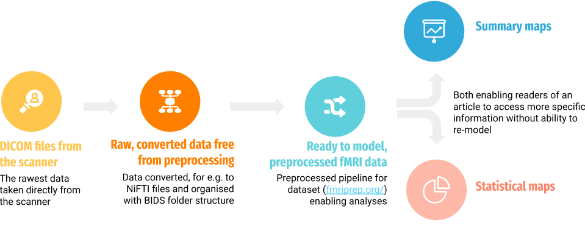

Data sharing¶
Reporting details about your scientific methods is no longer sufficient to address the complex relationship between science and society. More and more funding bodies require scientists to make their data public after the end of the study. Sharing data in open repositories enables other scientists to reuse your data to answer their research question or to develop new analysis techniques. As a result, society could benefit as much as possible from carrying every single scientific project.
Optimism about propagating reproducible science is challenged by the complex ethical, legal, and social issues it raises. Below, we provide explicit suggestions you may fulfill to change how you conduct the study, before putting your neuroimaging data into a public repository.
Ethical approval¶
In case you want to collect neuroimaging data for your project, you first have to apply for study approval from the local ethical committee. In the application, you have to include the study protocol, a patient or participant information letter, a consent form, and some extra information.
If you plan to share your data in a public repository, you must write this explicitly in your application to the ethical board. Moreover, you have to include the additional consent form, where study participants agree to share their data publicly.
We encourage every researcher to use the ultimate consent form template put together in documentation thanks to the Open Brain Consent project.
Data user agreement¶
Certain data circumstances (e.g. clinical) may not be possible to share without additional protective measures, such as data user agreement which specifies how to deal with subject confidentiality issues when accessing identifiable human data.
Once again, Open Brain Consent provides us a template for such agreement. The agreement have an specified data management plan that clearly defines some problematic issues, for e.g. the researcher signing the agreement obliges to be the data controller who determines the purposes for which and how personal data is processed. Additionally, a data user agreement helps the researchers to access the data even outside of Europe.
Anonymization process¶
The raw neuroimaging data contain the personal data that can be used to identify your study participants (data headers, facial/skull structure). Thus, before sharing the data in a public repository, you have to process your data to ensure proper anonymization.
Open Brain Consent lists a several tools that allow researchers to strip out personal data:
to sanitize the headers/filenames:
DeID is a Java program which allows users to remove identifying information in neuroimaging datasets, while still maintaining the association among different data types from the same subject for further studies;
PyDICOM’s deid is a Python module intended for basic coding of medical images, which means “cleaning” image headers and pixel data, and integrating with your own functions to replace with anonymous identifiers;
to skull stripping:
to faces/dental stripping:
PyDeface is a tool to remove facial structure from MRI images;
mridefacer aligns template mask to the input image and it requires FSL and the environment variable FSLDIR to be set accordingly.
Note
The researcher is obliged to remove all identifying information before sharing the data for research purposes, including full face photographic images and all comparable images, from human subject scans.
Open data sharing platforms¶
Data sharing permits others to reproduce the results of a particular study in the future and it also maximizes the value of research funds already spent. Submission to a repository before publishing an article allows the author to indicate to readers and reviewers about the specific location of the collected data.
There is a variety of data types you may want to share and at what stage they can be useful to share with collaborators or potential replication researchers.
We recommend the widest sharing of data possible within next steps of preprocessing and those drawing conclusions but all of those with proper description and file organization.
There are two most recommended repositories dedicated to sharing neuroimaging data:
OpenfMRI platform dedicated to the free and open sharing of raw magnetic resonance imaging (MRI) datasets;
OpenNeuro is a platform which accepts datasets which we can upload via our command-line utility tool.
Note
Every database stored to this repository conforms to the BIDS data organization scheme. It is also important that these open data sharing platforms do not accept datasets that have not been defaced for privacy considerations and do not contain consent forms.
Attach a license¶
Data is processed differently by the legal system than creative works, therefore they require special licenses which ones save you a time of making clearly defined terms of use data from potential interested ones.
Major scientific institutions recommend using an unrestricted Public Domain license such as CC0 which has universal form and it may be used throughout the world for any kind of content without adaptation to account for laws in different jurisdictions. See more information.